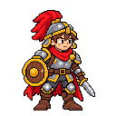
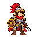

Seasoned front-line anchor
Warrior
Warrior family anchorCompact adult, red-plumed helmet, round shield, short blade, worn heavy armor.
- Pose
- Heavy and planted.
- Palette
- Red, gold, steel, leather.
warrior-approved-reference.png

Exact master SHA-256
cad8b04c066a149a081095ea7507091fd92fa65fdfd95ca9a40366cfcdbb9447